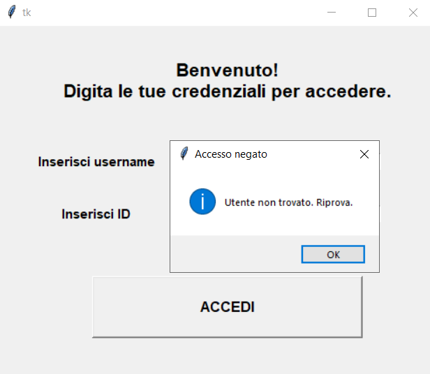
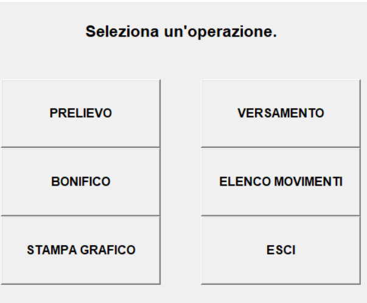
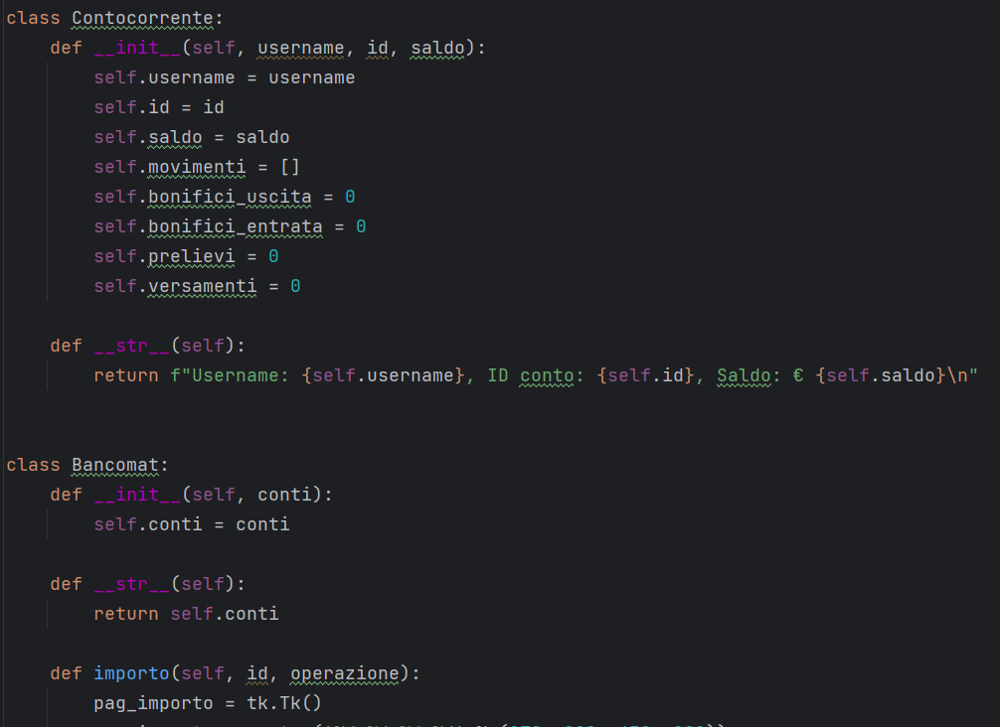
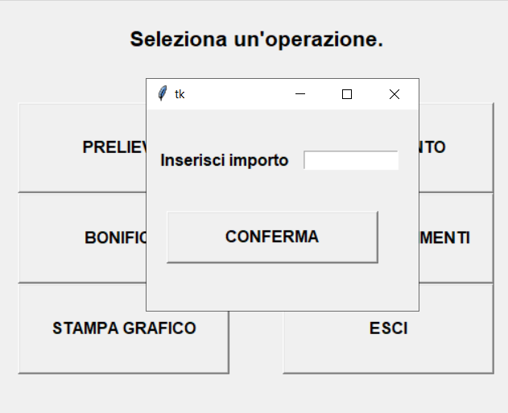
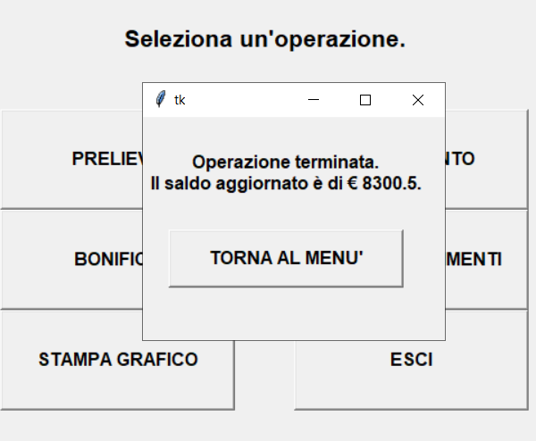
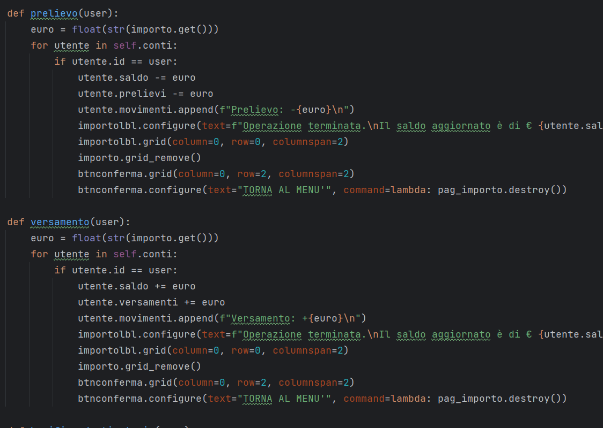
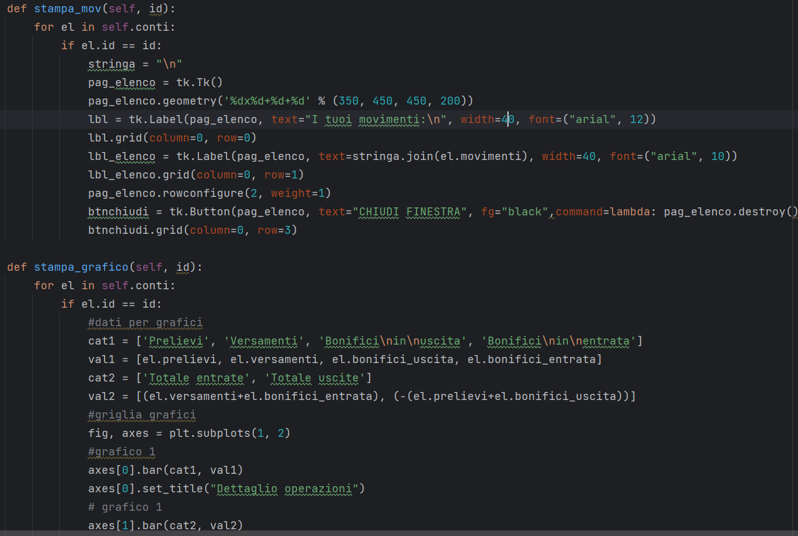
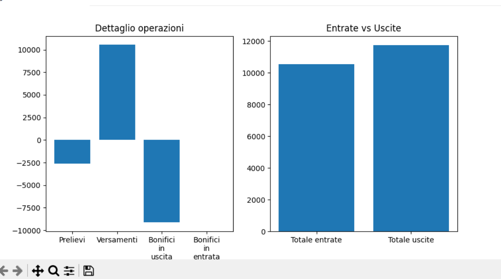
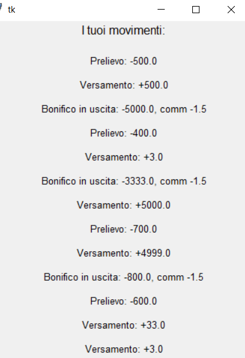

Il progetto gestisce uno sportello bancomat.
Dopo aver digitato le credenziali corrette,
l'utente accede nella sua area privata e visualizza la lista delle operazioni disponibili.


La struttura presenta una prima classe che raggruppa tutti i dettagli del conto corrente
ed una seconda contenente tutti i conti del bancomat.
All'interno della classe bancomat sono implementate le def che manipolano i dati delle classi.

Se l'utente sceglie di prelevare, versare o effettuare un bonifico, si apre una nuova pagina
che richiede l'importo e, in caso di bonifico, il destinatario.
Ad operazione effettuata viene visualizzato il saldo aggiornato.
Se il destinatario è un cliente della stessa banca, anche il suo saldo viene aggiornato.
Tutte le variazioni in entrata e uscita vengono salvate nel file picker che contiene tutti i movimenti e
dati dei conti.



Ogni movimento viene salvato in una lista movimenti che, su richiesta, può essere
stampata dall'utente.
Inoltre, ad ogni operazione vengono aggiornate le variabili per ogni categoria
di entrata o di uscita e queste vengono utilizzate per l'elaborazione dei grafici.
Per i grafici è stata utilizzata la libreria matplotlib.pyplot.
Per l'archiviazione dei dati la libreria pickle.


